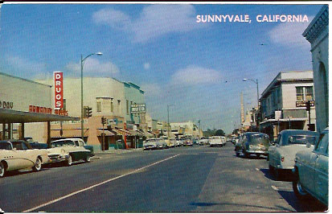

<h1>Hello, MIT World!</h1>
 <h2>Do you like vintage postcards?</h2>
 <p><strong>You're in luck! Here's one of downtown Sunnyvale, California.</strong></p>
 

 <br />
 <br />

 <h3>Visiting Sunnyvale anytime soon? Be sure to check out these places:</h3>
 <h4>Outdoor activities and more:</h4>
 <ul>
     <li><a href="https://www.yelp.com/biz/baylands-park-trail-sunnyvale-2?osq=park">Long walks or bike rides are always a blast at Baylands Park Trail</a></li>
     <li><a href="https://www.yelp.com/biz/sunnyvale-bay-trail-sunnyvale?osq=park">The Sunnyvale Bay Trail is a great place for photography lovers</a></li>
     <li><a href="https://www.yelp.com/biz/las-palmas-park-sunnyvale">Take a walk amongst a blend of redwoods and gigantic palm trees at Las Palmas Park</a></li>
     <li><a href="https://www.yelp.com/biz/leighs-favorite-books-sunnyvale">Grab yourself a book or memorabilia at Leigh's Favorite Books</a></li>
 </ul>

 <br />

 <h4>Foodstuff:</h4>
 <ol>
     <li><a href="https://www.yelp.com/biz/sunnyvale-farmers-market-sunnyvale?osq=Downtown+Sunnyvale">Try out our farmer's market in the weekends</a></li>
     <li><a href="https://www.yelp.com/biz/nom-burger-sunnyvale?osq=Downtown+Sunnyvale+Restaurants">The best burgers in town at Nom Burger</a></li>
     <li><a href="https://www.yelp.com/biz/sweet-sicily-sunnyvale-sunnyvale?osq=Downtown+Sunnyvale+Restaurants">If you have a sweet tooth, you'll love these Italian pastries at Sweet Sicily</a></li>
 </ol>
